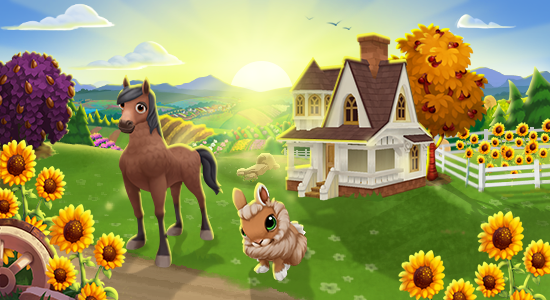
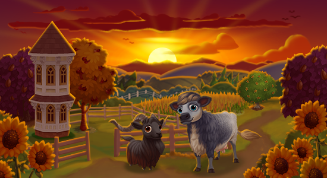
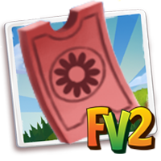
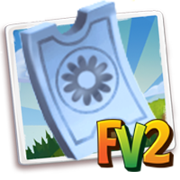
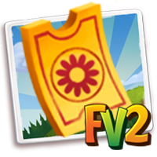

FarmVille 2
I got to work on the Studio's biggest game before my transition to the Zynga India mobile team. At FarmVille 2, I worked on a Bold-Beat which was a farm expansion, allowing high level players to expand their farms.


Farmville 2 Sun Rise Landscapes and Sunset Gardens was the newest theme for the most recent inclusion of farm growth. There was a total of 9 lots to expand to. There was also a new level cap of up to stage 280 and a new maximum capacity of up to 76 million Farm-Coins.



For the first time, in an expansion a Scratch Card mechanic was introduced, which essentially was a mini-game in FarmVille 2 allowing players to scratch and win progressivley rarer and more valuable items.